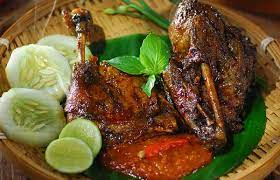

Resep Bebek Bakar

Bahan
- 1 ekor bebek
- 2 sdm jeruk nipis
- 25 batang serai, memarkan
- 6 lembar daun salam
- 2 sdm minyak goreng
- minyak secukupnya
- 10 butir bawang merah
- 8 siung bawang putih
- 2 sdm gula
- 10 butir kemiri
- 2 sdm garam
- 2 sdm kecap manis
Langkah
-
Siapkan panci tekan. Potong bebek menjadi 4 bagian, lumuri dengan
air jeruk nipis/cuka, sisihkan selama 10 menit. Cuci bebek hingga
bersih dan bau amisnya berkurang.
-
Lumuri potongan bebek dengan bumbu halus, remas-remas hingga seluruh
bagian bebek berlumur bumbu, sisihkan selama 15 menit agar bumbu
meresap.
-
Masukkan bebek ke dalam panci presto, tuang air panas. Tambahkan
serai dan daun salam. Tutup panci presto rapat-rapat, jerang di atas
api selama 60 menit hingga terdengar bunyi mendesis, angkat. Biarkan
hingga dingin, baru buka tutup panci.
-
Tiriskan bebek. Pisahkan bumbunya, lalu campur dengan minyak goreng
dan kecap manis, aduk. Bakar bebek di atas bara api sambil olesi
bumbu di permukaannya hingga tercium aroma bakar, angkat.
-
Sambal: Panaskan minyak dalam wajan, tumis cabai, bawang merah,
bawang putih, dan terasi hingga bahan agak layu. Masukkan tomat,
masak hingga seluruh bahan agak mengering, angkat. Taruh di atas
cobek, tambahkan garam dan gula, ulek hingga halus.